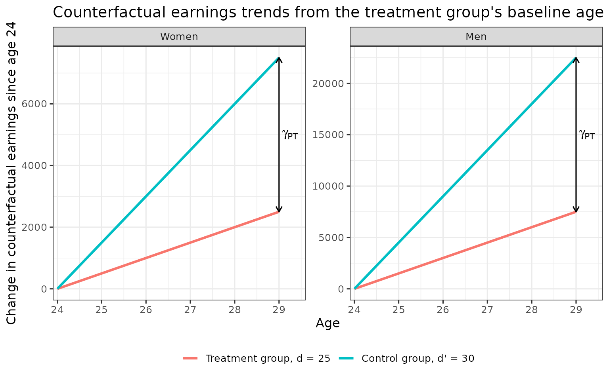
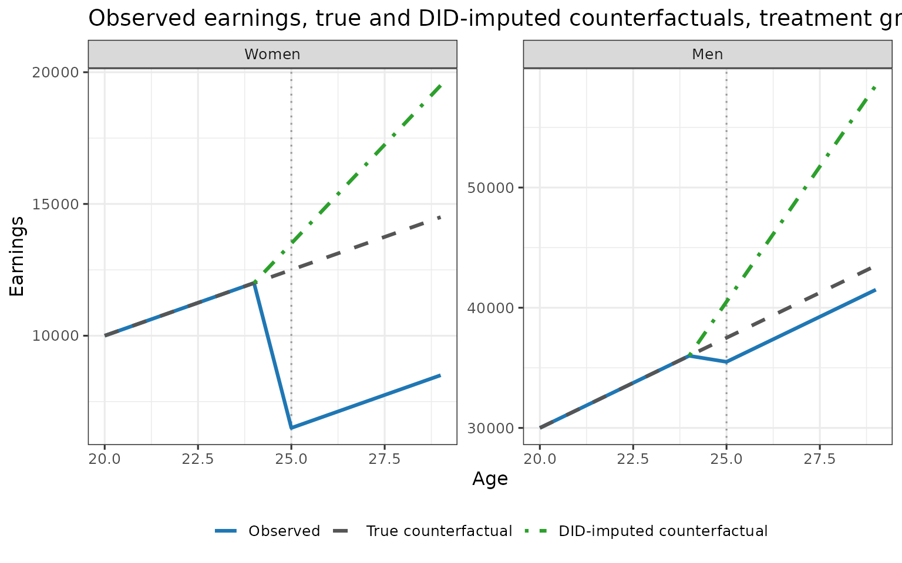
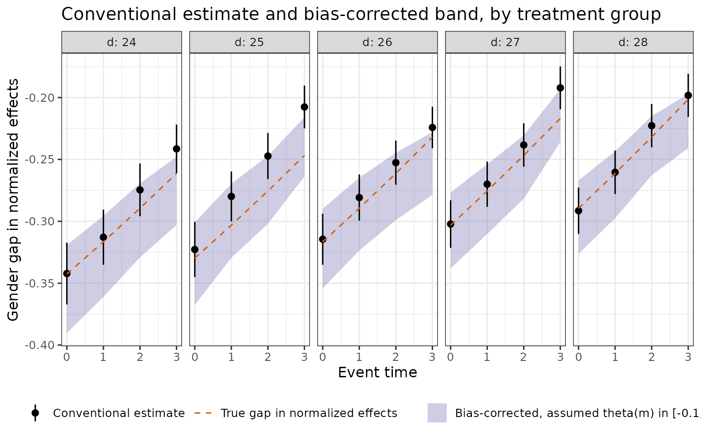

This article walks through the identification results of Leventer (2025), Identification of Child Penalties (Sections 2 to 4), in a stylised world where every population quantity is known, so each result can be checked by direct computation. Section and theorem numbers refer to the paper; appendices are referred to by name. Estimators and standard errors are in Estimation, aggregation across treatment groups in Aggregation, and the paper’s empirical results in Replicating the paper.
Setup
Symbols follow Notation and output: is gender, the treatment group (age at first birth), the control group, not yet treated at the target age (). For a single the arguments are suppressed, e.g. and . Write for observed mean earnings. The descriptive DID estimands are , and . The example has two genders and treatment groups (early) and (late), with counterfactual earnings linear in age, steeper for the late group and for men, and a constant earnings change from parenthood in levels. No anticipation and NTD-PT hold by construction; parallel trends within gender does not.
toy_world <- function(base = c(f = 500, m = 1500), # slope of the d = 25 group (earnings per year of age)
mult = c(f = 3, m = 3), # slope multiple per five years of later first birth
ate_lv = c(f = -6000, m = -2000)) { # earnings change from parenthood, in levels
apo <- function(g, d, a) unname(base[g] * mult[g]^((d - 25) / 5)) * a # APO(g, d, inf, a)
mu <- function(g, d, a) apo(g, d, a) + (a >= d) * unname(ate_lv[g]) # E[Y_a | G = g, D = d]
ate <- function(g, d, a) mu(g, d, a) - apo(g, d, a)
theta <- function(g, d, a) ate(g, d, a) / apo(g, d, a)
gamma_pt <- function(g, d, dp, a)
(apo(g, d, a) - apo(g, d, d - 1)) - (apo(g, dp, a) - apo(g, dp, d - 1))
did_apo <- function(g, d, dp, a) mu(g, d, d - 1) + mu(g, dp, a) - mu(g, dp, d - 1)
did_ate <- function(g, d, dp, a) mu(g, d, a) - did_apo(g, d, dp, a)
did_theta <- function(g, d, dp, a) did_ate(g, d, dp, a) / did_apo(g, d, dp, a)
list(apo = apo, mu = mu, ate = ate, theta = theta, gamma_pt = gamma_pt,
did_apo = did_apo, did_ate = did_ate, did_theta = did_theta)
}
invisible(list2env(toy_world(), environment())) # apo(), mu(), gamma_pt(), did_apo(), ...
d <- 25 # treatment group
dp <- 30 # control groupIn this world
with , , , and . Since for , no anticipation holds.
Parallel trends within gender and selection on timing
The difference in counterfactual earnings trends between treatment group and control group , both measured from the treatment group’s baseline age to age , is
DID-PT states for . Section 2 argues that groups that delay childbirth differ in human capital and so have steeper counterfactual earnings trajectories, which makes when the control group is a later group. In the example, with the slope of group , negative because the late group is steeper.
trend <- expand_grid(g = c("f", "m"), grp = c(25, 30), a = 24:29) |>
mutate(change = apo(g, grp, a) - apo(g, grp, 24),
gender = factor(g, c("f", "m"), c("Women", "Men")),
group = factor(grp, c(25, 30), c("Treatment group, d = 25", "Control group, d' = 30")))
gap <- expand_grid(g = c("f", "m"), a = 29) |>
mutate(gender = factor(g, c("f", "m"), c("Women", "Men")),
lo = apo(g, 30, a) - apo(g, 30, 24),
hi = apo(g, 25, a) - apo(g, 25, 24))
ggplot(trend, aes(a, change, colour = group)) +
geom_line(linewidth = 1.1) +
geom_segment(data = gap, aes(x = a, xend = a, y = lo, yend = hi), inherit.aes = FALSE,
arrow = arrow(ends = "both", length = unit(0.08, "in"))) +
geom_text(data = gap, aes(x = a, y = (lo + hi) / 2, label = "gamma[PT]"), parse = TRUE,
hjust = -0.2, inherit.aes = FALSE) +
facet_wrap(~ gender, scales = "free_y") +
scale_x_continuous(breaks = 24:29, expand = expansion(mult = c(0.02, 0.12))) +
labs(title = "Counterfactual earnings trends from the treatment group's baseline age",
x = "Age", y = "Change in counterfactual earnings since age 24", colour = NULL)
In both panels the control group’s counterfactual trend lies above the treatment group’s, and the gap widens with the target age.
DID adds the control group’s change since to the treatment group’s own earnings at . Under no anticipation (NA: for ) this imputation differs from the true counterfactual by exactly (Lemma 1):
levels_df <- expand_grid(g = c("f", "m"), a = 20:29) |>
mutate(Observed = mu(g, d, a),
`True counterfactual` = apo(g, d, a),
`DID-imputed counterfactual` = if_else(a >= d - 1, did_apo(g, d, dp, a), NA_real_),
gender = factor(g, c("f", "m"), c("Women", "Men"))) |>
pivot_longer(c(Observed, `True counterfactual`, `DID-imputed counterfactual`),
names_to = "series", values_to = "earnings") |>
mutate(series = factor(series, c("Observed", "True counterfactual", "DID-imputed counterfactual")))
ggplot(levels_df, aes(a, earnings, colour = series, linetype = series)) +
geom_vline(xintercept = d, colour = "grey60", linetype = "dotted") +
geom_line(linewidth = 1.1, na.rm = TRUE) +
facet_wrap(~ gender, scales = "free_y") +
scale_colour_manual(values = c("Observed" = "#1f77b4", "True counterfactual" = "#555555",
"DID-imputed counterfactual" = "#2ca02c")) +
scale_linetype_manual(values = c("Observed" = "solid", "True counterfactual" = "dashed",
"DID-imputed counterfactual" = "dotdash")) +
labs(title = "Observed earnings, true and DID-imputed counterfactuals, treatment group d = 25",
x = "Age", y = "Earnings", colour = NULL, linetype = NULL)
The dotted vertical line marks the age at first birth. With the DID-imputed counterfactual lies above the true one by , so DID ATE lies below the true ATE by the same amount: DID overstates the earnings loss, and by more at later ages. The table checks both parts of Lemma 1.
post <- 25:29
lemma <- expand_grid(g = c("f", "m"), a = post) |>
mutate(APO = apo(g, d, a), DID_APO = did_apo(g, d, dp, a), gamma = gamma_pt(g, d, dp, a),
ATE = ate(g, d, a), DID_ATE = did_ate(g, d, dp, a))
stopifnot(all.equal(lemma$DID_APO, lemma$APO - lemma$gamma),
all.equal(lemma$DID_ATE, lemma$ATE + lemma$gamma))
lemma |>
transmute(Gender = if_else(g == "f", "Women", "Men"), Age = a, APO, `DID APO` = DID_APO,
`$\\gamma_{PT}$` = gamma, ATE, `DID ATE` = DID_ATE) |>
knitr::kable(digits = 0, format.args = list(big.mark = ","))| Gender | Age | APO | DID APO | ATE | DID ATE | |
|---|---|---|---|---|---|---|
| Women | 25 | 12,500 | 13,500 | -1,000 | -6,000 | -7,000 |
| Women | 26 | 13,000 | 15,000 | -2,000 | -6,000 | -8,000 |
| Women | 27 | 13,500 | 16,500 | -3,000 | -6,000 | -9,000 |
| Women | 28 | 14,000 | 18,000 | -4,000 | -6,000 | -10,000 |
| Women | 29 | 14,500 | 19,500 | -5,000 | -6,000 | -11,000 |
| Men | 25 | 37,500 | 40,500 | -3,000 | -2,000 | -5,000 |
| Men | 26 | 39,000 | 45,000 | -6,000 | -2,000 | -8,000 |
| Men | 27 | 40,500 | 49,500 | -9,000 | -2,000 | -11,000 |
| Men | 28 | 42,000 | 54,000 | -12,000 | -2,000 | -14,000 |
| Men | 29 | 43,500 | 58,500 | -15,000 | -2,000 | -17,000 |
The validation test and what it validates
Normalized event studies check that the gender gap in normalized DID is zero before childbirth. For a single with and a pre-treatment age , the test is . Proposition 1 shows what restriction on potential outcomes this test carries.
Proposition 1. Under NA,
The test is thus a joint test of NA and of equal normalized trend differences across genders at the pre-treatment age. The same equality at ages is NTD-PT (equal difference in normalized trends); by Lemma 1 it says the percentage error of the DID-imputed counterfactual, , is the same for both genders. TD-PT is the counterpart in levels, . As with pre-trends in DID, the test speaks to the assumption at pre-treatment ages, while the assumption concerns post-treatment ages.
Each assumption is about one treatment-control pair , and with the closest not-yet-treated control the control group changes with the target age. The test is therefore run separately for each control group (Section 2.3). The table takes treatment group at age against control groups . Under NA and with before treatment, , so the DID columns are the pre-trends. The last column repeats the normalized gap in a world where men’s slope multiple is instead of .
a0 <- 22
dps <- 26:31
alt <- toy_world(mult = c(f = 3, m = 4)) # NTD-PT fails: gender-specific slope multiples
pre <- tibble(dp = dps) |>
mutate(did_f = did_ate("f", d, dp, a0),
did_m = did_ate("m", d, dp, a0),
td = did_f - did_m,
ntd = did_theta("f", d, dp, a0) - did_theta("m", d, dp, a0),
ntd_alt = alt$did_theta("f", d, dp, a0) - alt$did_theta("m", d, dp, a0))
# DID pre-trends equal gamma_PT; the normalized gap is zero iff the normalized gammas agree
stopifnot(all.equal(pre$did_f, gamma_pt("f", d, dps, a0)),
all.equal(pre$did_m, gamma_pt("m", d, dps, a0)),
all(abs(pre$ntd) < 1e-10),
all.equal(gamma_pt("f", d, dps, a0) / apo("f", d, a0),
gamma_pt("m", d, dps, a0) / apo("m", d, a0)),
all(abs(pre$ntd_alt) > 1e-3),
all(abs(alt$gamma_pt("f", d, dps, a0) / alt$apo("f", d, a0) -
alt$gamma_pt("m", d, dps, a0) / alt$apo("m", d, a0)) > 1e-3))
pre |>
mutate(ntd = round(ntd, 8) + 0) |>
transmute(`Control group $d'$` = dp,
`DID, women` = did_f, `DID, men` = did_m,
`TD gap` = td,
`Normalized gap` = ntd,
`Normalized gap, $\\lambda_m = 4$` = ntd_alt) |>
knitr::kable(digits = c(0, 0, 0, 0, 3, 3), format.args = list(big.mark = ","))| Control group | DID, women | DID, men | TD gap | Normalized gap | Normalized gap, |
|---|---|---|---|---|---|
| 26 | 246 | 737 | -491 | 0 | -0.007 |
| 27 | 552 | 1,656 | -1,104 | 0 | -0.019 |
| 28 | 933 | 2,800 | -1,866 | 0 | -0.041 |
| 29 | 1,408 | 4,225 | -2,816 | 0 | -0.080 |
| 30 | 2,000 | 6,000 | -4,000 | 0 | -0.153 |
| 31 | 2,737 | 8,212 | -5,474 | 0 | -0.305 |
The DID pre-trends are non-zero and grow with the distance between and , so DID-PT fails; the TD gap is non-zero, so TD-PT fails. The normalized gap is zero for every control group: in the example , which does not depend on gender when . With gender-specific slope multiples the normalized gap is non-zero for every control group, as Proposition 1 implies.
In the package these tests are the rows with
event_time < 0, method == "Conventional"
and estimand == "gap_theta", one per control group
(control_offset
),
returned when periods_pre is not NULL.
Non-identification of the conventional target
The conventional target is the gender gap in normalized effects,
with
;
its descriptive counterpart is the gender gap in normalized DID,
(package row: method Conventional, estimand
gap_theta). Lemma 1 gives the within-gender normalized
DID:
The second term is additive and, under NTD-PT, equal across genders, so it cancels in the gender difference. The first term scales by the ratio of true to imputed counterfactual earnings, also equal across genders under NTD-PT but multiplicative, so it survives differencing.
Theorem 1. Let , assume NA and NTD-PT, and . Then
With , and the conventional gap is smaller in magnitude than the target gap. Both sides in the example:
thm1 <- expand_grid(g = c("f", "m"), a = post) |>
mutate(APO = apo(g, d, a), gam = gamma_pt(g, d, dp, a),
bias = APO / (APO - gam), add = gam / (APO - gam),
th = theta(g, d, a), dth = did_theta(g, d, dp, a))
# Lemma 1, normalized part
stopifnot(all.equal(thm1$dth, thm1$th * thm1$bias + thm1$add))
thm1 <- thm1 |>
select(g, a, bias, add, th, dth) |>
pivot_wider(names_from = g, values_from = c(bias, add, th, dth)) |>
mutate(target = th_f - th_m, conventional = dth_f - dth_m, rhs = bias_f * target)
# Theorem 1: bias term and additive term equal across genders; both sides match
stopifnot(all.equal(thm1$bias_f, thm1$bias_m),
all.equal(thm1$add_f, thm1$add_m),
all.equal(thm1$conventional, thm1$rhs))
thm1 |>
transmute(Age = a, `Bias, women` = bias_f, `Bias, men` = bias_m,
`$\\theta(f) - \\theta(m)$` = target,
`$\\delta_\\theta(f) - \\delta_\\theta(m)$` = conventional,
`Bias $\\times [\\theta(f) - \\theta(m)]$` = rhs) |>
knitr::kable(digits = 4)| Age | Bias, women | Bias, men | Bias | ||
|---|---|---|---|---|---|
| 25 | 0.9259 | 0.9259 | -0.4267 | -0.3951 | -0.3951 |
| 26 | 0.8667 | 0.8667 | -0.4103 | -0.3556 | -0.3556 |
| 27 | 0.8182 | 0.8182 | -0.3951 | -0.3232 | -0.3232 |
| 28 | 0.7778 | 0.7778 | -0.3810 | -0.2963 | -0.2963 |
| 29 | 0.7436 | 0.7436 | -0.3678 | -0.2735 | -0.2735 |
The additive terms are also equal across genders at every age (checked in the chunk). The conventional gap is smaller in magnitude than the target gap at every age, by the factor , which falls as grows relative to .
Bias bounding
Proposition 2. In the setup of Theorem 1, if is known,
If fathers’ counterfactual earnings are known, is identified through Lemma 1, hence , and dividing the conventional gap by it gives the target. Observed earnings identify , so an assumed value of is an assumed value of .
The bias-bounding exercise of Section 3.3 evaluates this correction over a range of assumed and compares it with the conventional estimate. In terms of the bias-corrected gap is
where
is the NTD estimand of the last section. The two expressions are the
same function of the data; the second is the form
bias_bounds() computes. Both are linear in
,
so the values at the ends of an interval bound the whole interval. In
the example:
for (th_m in c(-0.1, 0.1)) { # assumed theta(m)
conv <- did_theta("f", d, dp, post) - did_theta("m", d, dp, post)
form1 <- conv * did_apo("m", d, dp, post) * (1 + th_m) / mu("m", d, post)
drho <- mu("f", d, post) / mu("m", d, post) - did_apo("f", d, dp, post) / did_apo("m", d, dp, post)
form2 <- drho * did_apo("m", d, dp, post) / did_apo("f", d, dp, post) * (1 + th_m)
stopifnot(all.equal(form1, form2))
}
# Proposition 2 with the true theta(m) recovers the target gap
conv <- did_theta("f", d, dp, post) - did_theta("m", d, dp, post)
apo_m <- mu("m", d, post) / (1 + theta("m", d, post))
stopifnot(all.equal(conv * did_apo("m", d, dp, post) / apo_m,
theta("f", d, post) - theta("m", d, post)))With simulated data
simulate_data() attaches the true values, so the band
can be compared with the true gap. The simulation satisfies NTD-PT only
approximately (see ?simulate_data).
library(childpen)
sim <- simulate_data(20000, 24:32)
truth <- attr(sim, "truth")
res <- multiple_treatment_group_analysis(sim, 24:28, periods_post = 3, periods_pre = NULL,
verbose = FALSE)
bb <- bias_bounds(res, theta_m = c(-0.1, 0, 0.1))
# One cell: the bias-corrected gap at three assumed values of theta(m)
bb |> filter(d == 26, event_time == 3)
#> d dp a event_time theta_m est se ci_l ci_h
#> 1 26 30 29 3 -0.1 -0.2279862 0.007348756 -0.2423897 -0.2135826
#> 2 26 30 29 3 0.0 -0.2533180 0.008165285 -0.2693219 -0.2373140
#> 3 26 30 29 3 0.1 -0.2786498 0.008981813 -0.2962541 -0.2610454bias_bounds() returns one row per post-treatment cell
and assumed
.
Its estimate at
is the midpoint of the estimates at
,
as linearity implies. The plot shows the conventional estimate with its
95% confidence interval, the band of bias-corrected estimates for
,
and the true gap.
band <- bb |>
group_by(d, event_time) |>
summarise(lo = min(est), hi = max(est),
mid_gap = est[theta_m == 0] - (est[theta_m == -0.1] + est[theta_m == 0.1]) / 2)
stopifnot(max(abs(band$mid_gap)) < 1e-10)
conv_df <- res |>
filter(method == "Conventional", estimand == "gap_theta", event_time >= 0) |>
left_join(band, by = c("d", "event_time")) |>
left_join(select(truth, d, event_time, gap_theta), by = c("d", "event_time"))
ggplot(conv_df, aes(event_time)) +
geom_ribbon(aes(ymin = lo, ymax = hi, fill = "Bias-corrected, assumed theta(m) in [-0.1, 0.1]"),
alpha = 0.35) +
geom_pointrange(aes(y = est, ymin = ci_l, ymax = ci_h, colour = "Conventional estimate"),
size = 0.35) +
geom_line(aes(y = gap_theta, colour = "True gap in normalized effects"), linetype = "dashed") +
facet_wrap(~ d, nrow = 1, labeller = label_both) +
scale_x_continuous(breaks = 0:3) +
scale_colour_manual(values = c("Conventional estimate" = "black",
"True gap in normalized effects" = "#d95f02")) +
scale_fill_manual(values = c("Bias-corrected, assumed theta(m) in [-0.1, 0.1]" = "#7570b3")) +
labs(title = "Conventional estimate and bias-corrected band, by treatment group",
x = "Event time", y = "Gender gap in normalized effects", colour = NULL, fill = NULL) +
guides(colour = guide_legend(order = 1), fill = guide_legend(order = 2))
c(true_gap_inside_band = mean(conv_df$gap_theta >= conv_df$lo & conv_df$gap_theta <= conv_df$hi),
conventional_less_negative = mean(conv_df$est > conv_df$gap_theta))
#> true_gap_inside_band conventional_less_negative
#> 1.00 0.95The printed shares are the fraction of cells in which the true gap lies inside the band and the fraction in which the conventional estimate is less negative than the true gap. The latter matches and in Theorem 1; the difference between the conventional estimate and the true gap tends to widen with event time, as the control group moves away from .
Effect on the gender earnings ratio
Let be the realized gender earnings ratio and the ratio absent childbirth. The effect of parenthood on the gender earnings ratio is .
Theorem 2. In the setup of Theorem 1,
By consistency, . By Lemma 1, ; under NTD-PT the bracket is common to both genders and cancels in the ratio, so .
Since , the effect is related to the conventional target by equation (9) of the paper:
The two estimands coincide when the factor equals one, and the effect is smaller in magnitude than the conventional target when it is below one. In the example:
thm2 <- tibble(a = post) |>
mutate(rho_cf = apo("f", d, a) / apo("m", d, a), # rho(inf)
rho_obs = mu("f", d, a) / mu("m", d, a), # rho(d)
effect = rho_obs - rho_cf,
identified = rho_obs - did_apo("f", d, dp, a) / did_apo("m", d, dp, a),
target = theta("f", d, a) - theta("m", d, a),
factor = rho_cf / (1 + theta("m", d, a)),
eq9 = factor * target)
# Theorem 2 and equation (9): both sides match
stopifnot(all.equal(thm2$effect, thm2$identified),
all.equal(thm2$effect, thm2$eq9))
thm2 |>
transmute(Age = a, `$\\rho(d)$` = rho_obs, `$\\rho(\\infty)$` = rho_cf,
`$\\rho(d) - \\rho(\\infty)$` = effect,
`Theorem 2, right side` = identified,
`Factor $\\rho(\\infty)/(1+\\theta(m))$` = factor,
`$\\theta(f) - \\theta(m)$` = target) |>
knitr::kable(digits = 4)| Age | Theorem 2, right side | Factor | ||||
|---|---|---|---|---|---|---|
| 25 | 0.1831 | 0.3333 | -0.1502 | -0.1502 | 0.3521 | -0.4267 |
| 26 | 0.1892 | 0.3333 | -0.1441 | -0.1441 | 0.3514 | -0.4103 |
| 27 | 0.1948 | 0.3333 | -0.1385 | -0.1385 | 0.3506 | -0.3951 |
| 28 | 0.2000 | 0.3333 | -0.1333 | -0.1333 | 0.3500 | -0.3810 |
| 29 | 0.2048 | 0.3333 | -0.1285 | -0.1285 | 0.3494 | -0.3678 |
In the package this is the row with method NTD and
estimand rho_effect; its components are the rows
rho_obs
()
and rho_cf
().
The simulated data from the previous section give both estimands, with
their true values, at the longest event time:
# Equation (9) holds exactly in the simulation's true values
stopifnot(with(truth, all.equal(rho_effect, rho_cf / (1 + theta_m) * gap_theta)))
res |>
filter((method == "Conventional" & estimand == "gap_theta") |
(method == "NTD" & estimand == "rho_effect"), event_time == 3) |>
select(d, method, est) |>
pivot_wider(names_from = method, values_from = est) |>
left_join(filter(truth, event_time == 3) |> select(d, gap_theta, rho_effect), by = "d") |>
transmute(`Treatment group $d$` = d,
`Conventional estimate` = Conventional, `True $\\theta(f) - \\theta(m)$` = gap_theta,
`NTD estimate` = NTD, `True $\\rho(d) - \\rho(\\infty)$` = rho_effect) |>
knitr::kable(digits = 3)| Treatment group | Conventional estimate | True | NTD estimate | True |
|---|---|---|---|---|
| 24 | -0.241 | -0.261 | -0.254 | -0.249 |
| 25 | -0.208 | -0.247 | -0.217 | -0.231 |
| 26 | -0.224 | -0.232 | -0.234 | -0.214 |
| 27 | -0.192 | -0.217 | -0.191 | -0.197 |
| 28 | -0.198 | -0.201 | -0.194 | -0.180 |
The conventional estimate differs from the true gap in normalized effects through (Theorem 1); the NTD estimate differs from the true effect through sampling error and the approximation in NTD-PT. The estimators and their standard errors are written out in Estimation; the paper’s estimates of both estimands are in Replicating the paper.